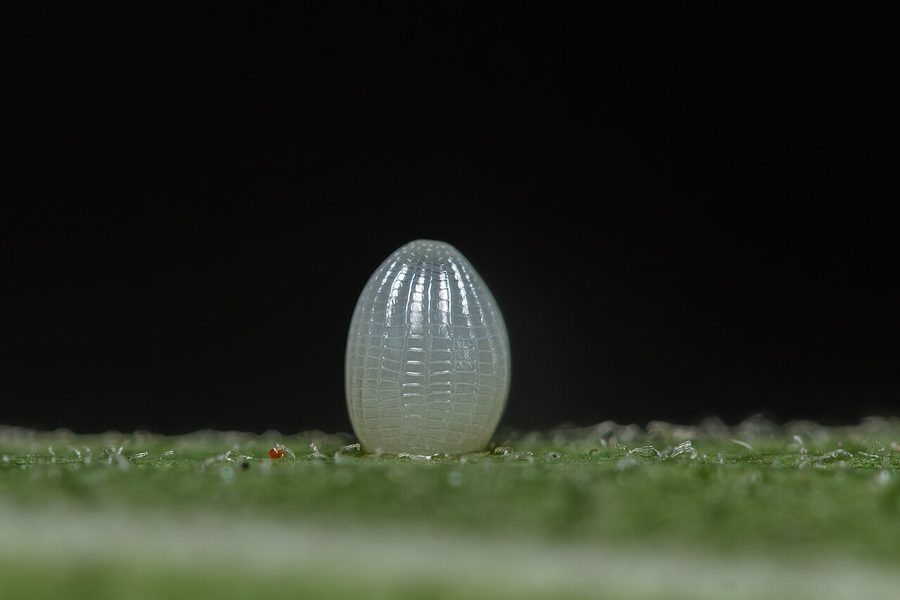

ब्लू टाइगर तितलीBlue Tiger
Tirumala limniace · Nymphalidae · INS-0071

- Scientific name
- Tirumala limniace (Stoll, 1782)
- Family
- Nymphalidae
- Hindi
- ब्लू टाइगर तितली
- Local names
- blue tiger, blue tiger titli, neeli titli, neeli dhariwali titli
- Status here
- native
- Movement
- Resident, here all year
- IUCN
- not evaluated
- Review
- audited and independently read
When to look कब देखें
Present all year.
Uses and possibilities उपयोग और संभावनाएँ
Drawn from the documented uses in the profile below, where each is labelled traditional, current or a research lead. All uses →
Tell it apart from इनसे अलग पहचानें
नीली बाघ तितली / Blue Tiger
Tirumala limniace (Stoll, 1782) — Nymphalidae
नीली बाघ तितली — पूर्वी उत्तर प्रदेश के खेतों, बागों और सड़क किनारों में पाई जाने वाली एक अत्यंत आकर्षक मध्यम आकार की गहरी नीली और काली तितली है। इसके पंखों का रंग गहरा नीला-काला (navy blue) होता है जिन पर सफ़ेद धब्बों की दो पंक्तियाँ होती हैं। यह मदार परिवार (milkweed) की पत्तियों खाती है और ज़हरीली हो जाती है, जिससे पक्षी इसे खाने से बचते हैं। यह तितली धीरे-धीरे उड़ती है और फूलों पर लंबे समय के लिए बैठी रहती है। इसकी सुंदर नीली रंगत और नीरव उड़ान गाँवों की प्राकृतिक सौंदर्य का प्रतीक है।
Quick Identification त्वरित पहचान
| Feature | Description |
|---|---|
| Size | Medium-sized butterfly; body length 28–35 mm; wingspan 75–90 mm |
| Coloration | Deep blue or navy-blue on the dorsal surface; white spotting on both wings |
| Forewing | Dark blue with a white oval patch and a row of white spots along the outer margin |
| Hindwing | Dark blue with a white discal patch (central spot) and white marginal spots |
| Underparts | Paler blue with darker markings and prominent white spots |
| Flight | Slow, weak, fluttering flight close to the ground |
Field tip: Look for a dark blue butterfly with white spots, flying slowly near milkweed (madar) plants. The deep blue coloring and the combination of white patches readily identify the Blue Tiger. It is often found resting on flowers with its wings held flat.
Morphology आकारिकी
Biometrics (typical measurements for adults in northern Indian plains):
| Measurement | Range |
|---|---|
| Body length | 28–35 mm |
| Wingspan | 75–90 mm |
| Forewing length | 35–42 mm |
Body: Slender, dark brown or black, with small white spots on the head and thorax.
Wings:
- Dorsal (upper) surface: Both wings are a deep, dark blue, almost navy-blue in color. The forewing contains a pale white oval patch in the discal region and a row of white spots along the outer margin. The hindwing has a white central patch (discal cell) and white marginal spots.
- Ventral (lower) surface: Paler blue than the upper side, with more prominent white spots and markings, which are more clearly visible when the butterfly is at rest.
Sexual Dimorphism: Males are more brightly colored than females. Females are slightly duller and larger.
Chemical Defense: The caterpillar feeds on toxic milkweeds (Giant Milkweed and Calotropis procera), storing cardenolide toxins in its tissues. The striking blue-and-white coloration serves as an aposematic (warning) signal to predators.
Behaviour & Ecology व्यवहार और पारिस्थितिकी
Slow, low flyer and milkweed specialist. The Blue Tiger is a weak flyer that stays close to the ground in weedy areas. Unlike swift swallowtails, it flies with a slow, lazy, fluttering pattern and spends much time hovering around flowers. Males patrol in search of females along hedgerows. The toxicity, combined with the striking coloration, makes the Blue Tiger a model for Batesian mimicry. Several other species have evolved to mimic its appearance.
Host-plant fidelity. The female is highly specialized on milkweed species and searches carefully for appropriate host leaves before ovipositing (laying eggs).
Life Cycle / Phenology जीवन चक्र
| Stage / Season | Event |
|---|---|
| Egg | Laid singly on milkweed leaves; pale yellow, smooth; hatch in 4–6 days |
| Larval (Caterpillar) | 4–5 instars; mature caterpillar 25–30 mm long; yellow-brown or pale green with black bands and black tentacles; development 18–24 days |
| Pupa | Smooth, hanging chrysalis; greenish or pale yellow with gold spots; emerges in 10–14 days |
| Adult | Emerges year-round; peak abundance June to November; lifespan 3–4 weeks |
Host Plants or Prey आहार
Larval host plants:
- Giant Milkweed (Giant Milkweed), Spindle Milkweed (Calotropis procera), and related Asclepias species.
Adult nectar sources:
- Lantana camara (Indian Lantana), wild composites, Cosmos, and flowering herbs.
Predators / Natural Enemies शत्रु
- Birds: Although chemically defended, some generalist insectivorous birds (like House Crow) prey on them cautiously.
- Spiders: Crab spiders and jumping spiders on flowers.
- Parasitoid Wasps: Small wasps lay eggs inside caterpillars and chrysalides.
Agricultural / Human Relevance कृषि प्रासंगिकता
Pollinator. The Blue Tiger visits a wide variety of flowers and serves as an effective pollinator in agricultural fields and home gardens.
Indicator species. Its abundance indicates the presence of milkweed plants in the area, which have traditional medicinal uses.
Expected Locally स्थानीय रूप से अपेक्षित
Not a field record. Written from published accounts for eastern Uttar Pradesh. No confirmed local sighting yet — if you have seen it, that is what the atlas needs.
अभी तक स्थानीय पुष्टि नहीं। यह विवरण प्रकाशित स्रोतों से है, किसी अवलोकन से नहीं।
To be expected in Basti district throughout the year, especially in areas with milkweed plants. Look for dark blue butterflies with slow, lazy flight patterns near madar (milkweed) plants and flowering weeds. Check milkweed leaves for caterpillars with black and pale bands. The first local record would be a photograph with place and date; send it to the atlas contact on the About page.
Distribution वितरण
Global range: Widespread across South Asia, Southeast Asia, and Australia.
In India: Distributed throughout the peninsula and the Gangetic plain.
In Uttar Pradesh: Abundant resident in all agricultural and forest districts.
In Basti district / eastern UP: Expected in all blocks, particularly in areas with milkweed plants.
Research Questions शोध प्रश्न
Anyone can investigate these | कोई भी इन प्रश्नों की जाँच कर सकता है
- Which milkweed species support the most Blue Tiger caterpillars in Basti fields? / बस्ती के खेतों में कौन सी मदार की प्रजाति सबसे ज़्यादा नीली बाघ तितली की इल्ली को खिलाती है? — Survey and record caterpillars on different milkweed species.
- How long do Blue Tiger caterpillars take to mature on Calotropis gigantea versus Calotropis procera? — Conduct rearing trials on each species.
- Do female Blue Tigers lay eggs on young terminal leaves or mature leaves of milkweed? — Observe oviposition sites.
- How many eggs can a single female lay during her lifetime? — Mark and observe captive females in a mesh cage.
- What is the ratio of Blue Tigers to Plain Tigers visiting the same Lantana patch in July? — Conduct timed observations.
Similar Species मिलती-जुलती प्रजातियाँ
| Species | How to tell apart | हिंदी |
|---|---|---|
| Striped Tiger (Danaus genutia) | Orange-brown coloration; heavy black veins; lacks the blue tone | धारीदार बाघ तितली — नारंगी-भूरा, काली धारियाँ |
| Common Tiger (Danaus melanippus) | White patches and streaks on hindwing; brown coloration; larger | कॉमन टाइगर — सफ़ेद पैच, बड़ा, भूरा |
| Danaid Eggfly (Hypolimnas misippus, female form) | Black head and body; lacks the prominent white patches | अंड-चित्ती तितली — काला शरीर |
Field rule: A dark blue butterfly with white spots on both wings, slow fluttering flight, and presence near milkweed plants identifies the Blue Tiger.
Taxonomy & Classification वर्गीकरण
Original description. Stoll described the Blue Tiger as Papilio limniace in 1782 in Lepidoptera Supplement to Cramer's work. The type locality is Asia. The genus Tirumala was later separated from Danaus to accommodate these milkweed specialists.
Subspecies. The nominate subspecies T. l. limniace occurs throughout the Indian subcontinent.
Family and order placement. Order Lepidoptera, family Nymphalidae, subfamily Danainae (milkweed butterflies).
Phylogenetic notes. Tirumala is a genus of toxic, milkweed-feeding danaids distributed across Asia. The genus is closely related to Danaus and shares similar chemical-defense strategies.
IUCN status rationale. Not evaluated. Common and widespread, under no conservation threat.
Photo Gallery फोटो गैलरी
No photos yet — add field photos to media/species/blue_tiger/ and run node scripts/sync_photos.js.
Photos needed आवश्यक फोटो
- [ ] Adult on milkweed flower (मदार पर)
- [ ] Caterpillar on host leaf (इल्ली)
- [ ] Chrysalis (प्यूपा)
References संदर्भ
- Stoll, C. (1782). Lepidoptera Supplement to Cramer's work. Amsterdam.
- Bingham, C.T. (1905). The Fauna of British India, including Ceylon and Burma. Butterflies. Vol. 1. Taylor & Francis, London.
- Kehimkar, I. (2008). The Book of Indian Butterflies. Bombay Natural History Society, Mumbai.
- Kunte, K. (2000). Butterflies of Peninsular India. Universities Press, Hyderabad.
- Brower, L.P. (1984). Chemical defence in butterflies. Symposia of the Royal Entomological Society of London 11: 109–134.
- GBIF Occurrence Data — Tirumala limniace, Uttar Pradesh (2010–2025).
Source file: species/fauna/insects/blue_tiger.md